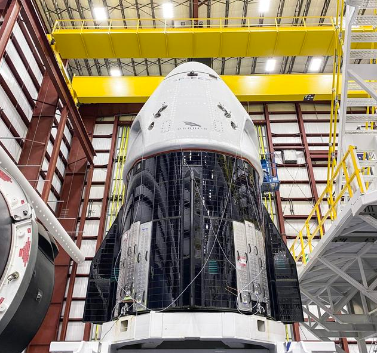
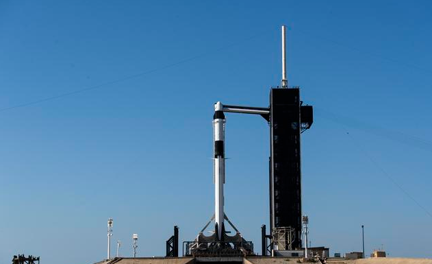
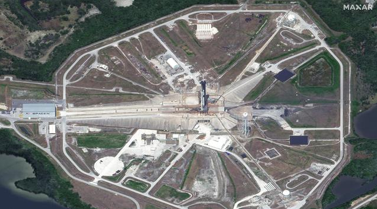

如今，SpaceX将迎来又一个全新的里程碑，载人航天任务。这是停滞十一年以来美国再度从本土发射宇航员升空。更是地球上私营航天公司的首次载人升空。本次任务代号：Demo-2。
发射前一段时间，美国佛罗里达州卡纳维拉尔角的肯尼迪航天中心，猎鹰9号火箭与龙2型太空舱已经做完大多数的发射调试工作，正静悄悄地躺在悬架上。
民营航天公司发射载人飞船？
近看龙2型！这是SpcaeX开发的第二版太空舱，它的任务就是搭载着宇航员送至国际空间站，乃至浩瀚无垠的太空。太空舱的顶部写着SPACEX的商标，中间有Dragon的型号和图标。
久经沙场的猎鹰九号火箭，它创造了太空火箭回收的壮举。此刻已经被架设在39A号太空发射平台。39A的选择并非随意的结果。当年阿波罗号太空船宇航员登月的火箭，使用的正是这个平台。
从高空俯瞰39A号太空发射台，以及竖立在中心的猎鹰9号火箭。